19 האינטגרל המסוים
19.1 חלוקה של קטע, עובי החלוקה ובחירת נקודות
אינטגרל מהצורה: \[\int_b^a f(x)\,dx\]
תרשים: השטח הכלוא בין גרף \(f\) לציר ה-\(x\) בקטע \([a,b]\)
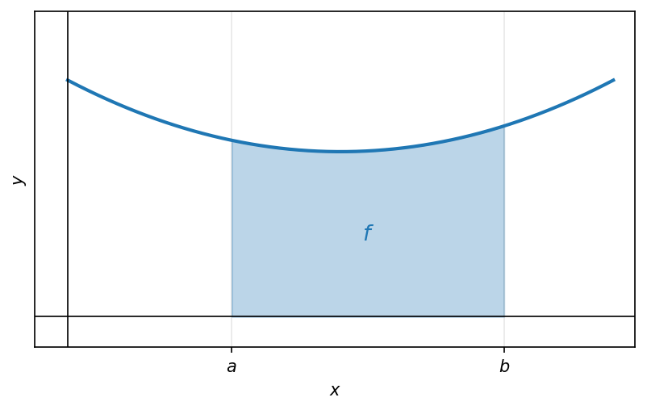
השטח שכלוא בין גרף הפונקציה של \(f\), לציר ה-\(x\), כאשר \(a \le x \le b\).
19.2 סכום רימן
דוגמא
תרשים: השטח הכלוא מתחת ל-\(f(x)=x^2\) בקטע \([0,1]\)
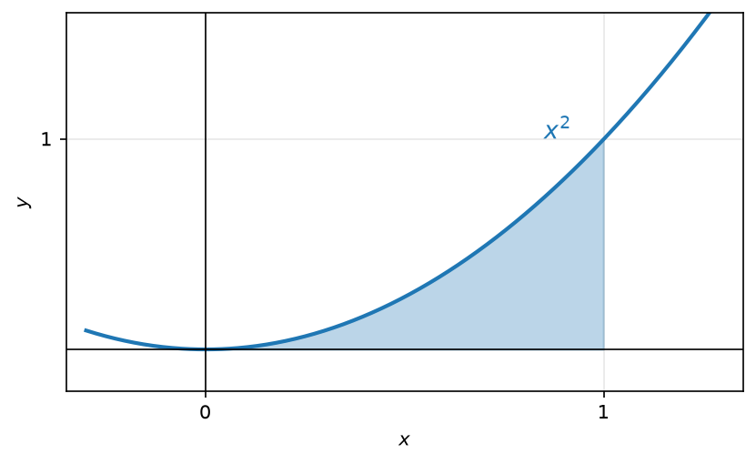
השטח הכלוא: \[\int_0^1 x^2\,dx = \left.\frac{x^3}{3}\right|_0^1 = \frac{1}{3}\]
(הקדומה שלה)
פיתוח האינטואיציה
תרשים: מלבן השטח מתחת לפונקציה הקבועה \(f(x)=C\) בקטע \([a,b]\)
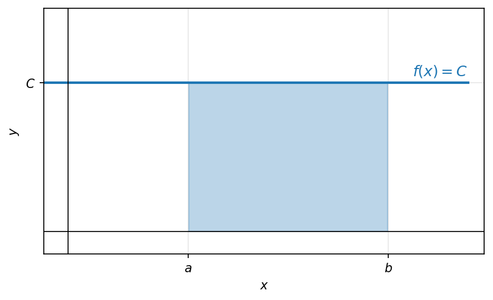
השטח הכלוא: \[(b-a) \cdot C\]
(שטח מלבן)
19.3 פונקציה אינטגרבילית בקטע
מהסכומים והתחומים
שטחי \(n\) המלבנים יתקרבו לשטח שרצינו.
תרשים: קירוב השטח מתחת ל-\(x^2\) ב-\(n\) מלבנים (סכום רימן) בקטע \([0,1]\)
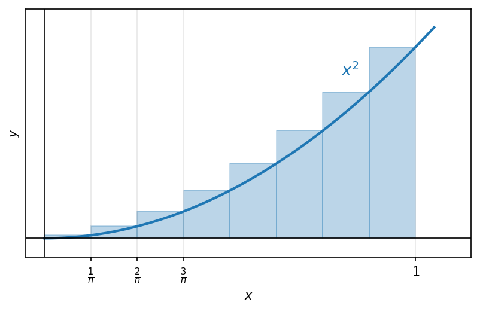
נחשב את סכומי המלבנים: \[\frac{1}{n} \cdot \left(\frac{1}{n}\right)^2 + \frac{1}{n} \cdot \left(\frac{2}{n}\right)^2 + \dots + \frac{1}{n}\left(\frac{n}{n}\right)^2 =\]
(מלבן 1, מלבן 2, מלבן \(n\))
\[= \frac{1}{n} \cdot \frac{1}{n^2} \cdot (1^2 + 2^2 + \dots + n^2) =\]
\[= \frac{1^2 + 2^2 + \dots + n^2}{n^3} = \frac{n(n+1)(2n+1)}{6n^3} \xrightarrow{n \to \infty} \frac{1}{3}\]
(מאינדוקציה)
פונקציה \(f\) שמוגדרת ב- \([a,b]\) וחסומה בו, נקראת אינטגרבילית ב- \([a,b]\), אם לכל חלוקה של \([a,b]\) ל-\(n\) קטעים שווים, ולכל בחירה של נקודות (מדגם) בין הקטעים האלה \((t_1, \dots, t_n)\) מתקיים:
סכומי רימן: \[\sum_{k=1}^{n} f(t_k) \cdot \left(\frac{b-a}{n}\right) \xrightarrow{n \to \infty} I\]
עבור \(I \in \mathbb{R}\) (מספר) ואז \[I = \int_a^b f(x)\,dx\]
19.4 פונקציית דיריכלה כפונקציה שאינה אינטגרבילית
דוגמא
תרשים: פונקציית דיריכלה בקטע \([0,2]\) — ערך \(1\) ברציונליים וערך \(0\) באי-רציונליים
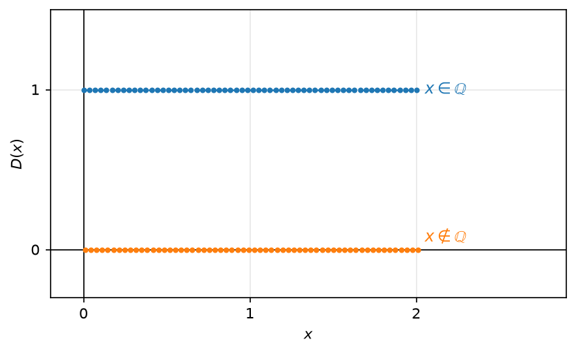
פונקציית דיריכלה: \[D(x) = \begin{cases} 1 & x \in \mathbb{Q} \\ 0 & x \notin \mathbb{Q} \end{cases}\]
פונקציית דיריכלה אינה אינטגרבילית ב- \([1,2]\): \[\int_1^2 D(x)\,dx\]
19.5 משפט: כל פונקציה רציפה בקטע סגור אינטגרבילית
משפט
כל פונקציה \(f\) שהיא רציפה ב- \([a,b]\), היא אינטגרבילית ב- \([a,b]\).
19.6 משפט: כל פונקציה מונוטונית בקטע סגור אינטגרבילית
תוכן בהכנה — להשלמה.
19.7 משפט: פונקציה חסומה עם מספר סופי של נקודות אי-רציפות אינטגרבילית
תרשים: השטח המוצלל מתחת ל-\(f\) בקטע \([a,b]\), המייצג את \(\int_a^b f\)
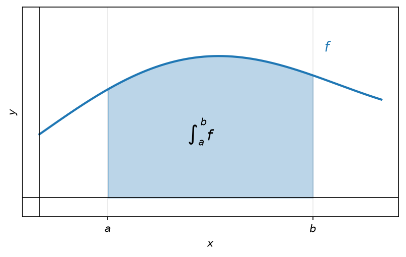
אם \(f\) פונקציה רציפה ב-\([a,b]\), פרט למספר סופי כלשהוא של נקודות בהן יש קפיצה או סליקה (“חור”), אז \(f\) אינטגרבילית ב-\([a,b]\).
דוגמא: פונקציית הערך השלם \(|x|\)
תרשים: הפונקציה \(f(x)=|x|\) עם הנקודות \(-2,-1,1,2,3\) והשטח המוצלל בקטע \([-2,3]\)
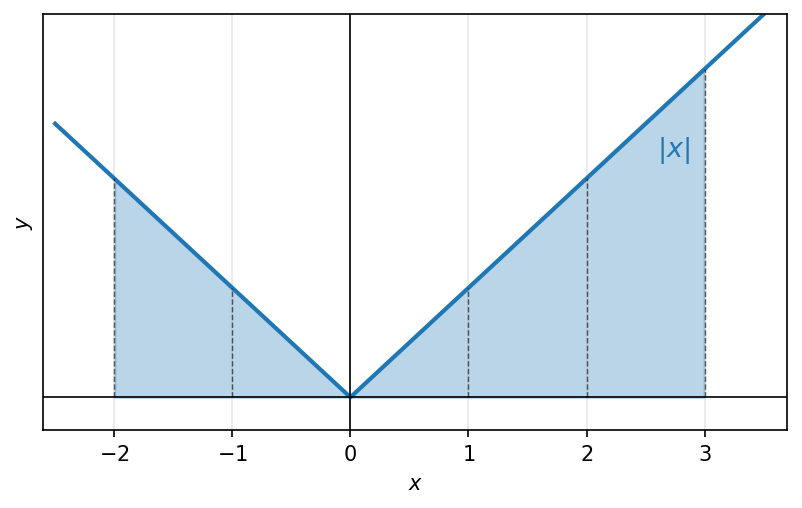
חשבו: \(\int_{-2}^{3} |x|\,dx\)
הפונקציה רציפה ב-\([-2,3]\) , פרט למספר נקודות (המספרים השלמים) ולכן היא אינטגרבילית בקטע.
אז:
\[\int_{-2}^{3} |x|\,dx = \int_{-2}^{-1} |x|\,dx + \int_{-1}^{0} |x|\,dx + \int_{0}^{1} |x|\,dx + \int_{1}^{2} |x|\,dx + \int_{2}^{3} |x|\,dx =\]
\[= \int_{-2}^{-1} (-2)\,dx + \int_{-1}^{0} (-1)\,dx + \int_{0}^{1} 0\,dx + \int_{1}^{2} 1\,dx + \int_{2}^{3} 2\,dx = -2 \cdot 1 - .. = 0\]
19.8 המשפט היסודי של החשבון האינפיניטסימלי
\[F(x) = \int_{a}^{x} f(t)dt : \text{השטח שמצטבר מתחת לגרף } f \text{ בין } a \text{ ל-x.}\]
(פונקציה של השטח הצבור)
זו פונקציה של \(x\) כאשר \(a \leq x \leq b\)
הרעיון:
\[F(x) \xrightarrow[x \to x_0]{} F(x_0)\]
המשפט:
אם \(f(x)\) רציפה ב-\([a,b]\) , אז הפונקציה \(F(x) = \int_{a}^{x} f(t)dt\) היא קדומה של \(f(x)\) ב-\([a,b]\).
כלומר, לכל \(F'(x) = f(x) : x \in [a,b]\)
תרשים: פונקציית השטח הצבור \(F(x)=\int_a^x f(t)\,dt\) — השטח מ-\(a\) עד \(x\) מתחת לפונקציה יורדת
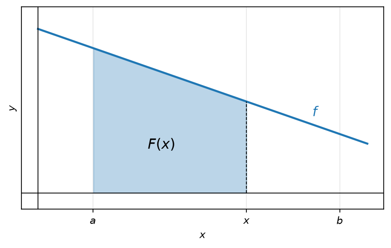
דוגמאות:
- אם \(f(t)=t\) ב-\([1,2]\), אז המשפט נותן ש:
\[F(x) \int_{1}^{x} t\,dt = \left.\frac{t^2}{2}\right|_{1}^{x} = \frac{x^2}{2} - \frac{1^2}{2} = \frac{x^2}{2} = \frac{1}{2}\]
הפונקציה הקדומה של \(f(x)=x\)
- עבור הפונקציה \(f(t) = \sin(t^2)\) (שאין לה קדומה אלמנטרית)
המשפט היסודי טוען כי יש לה קדומה ב-\([0,1]\), שנתונה ע”י: \(F(x) = \int_{0}^{x} \sin(t^2)dt\)
כלומר \(F'(x) = \sin(x^2)\) : הזו F(x) מקיימת
- נגדיר פונקציה \(g(x) = \int_{0}^{x} \sin(t^2)dt\)
א- נחשב \(g(0)\) : \(g(0) = \int_{0}^{0} \sin(t^2)dt = 0\)
ב- נחשב את \(g'(3)\) : מהמשפט היסודי \(g(x)\) היא קדומה של \(\sin(x^2)\) \(\to\) \(g'(3) = \sin(3^2) = \sin(9)\)
* אם היינו רוצים לחשב את \(g(1)\), לא היה אפשר.
נתונה \(g(x) = \int_{2}^{x^2} \frac{\sin(t)}{t}\,dt\) , חשבו את \(g'(2)\)
אם היינו לוקחים את \(F(x) = \int_{2}^{x} \frac{\sin(t)}{t}\,dt\) אז מהמשפט היסודי ידוע כי \(F'(x) = \frac{\sin(x)}{x}\)
לכן הקשר בין \(g\) ו-F: \(g(x) = F(x^2)\)
\[\downarrow\]
\[g'(x) = F'(x^2) \cdot 2x\]
\[\downarrow\]
\[g'(2) = F'(4) \cdot 4 = \frac{\sin(4)}{4} \cdot 4 = \sin(4)\]
19.9 נוסחת ניוטון-לייבניץ ומסקנות לגבי נגזרת של אינטגרל
אם ל- \(f(x)\) יש קדומה \(F(x)\) ב- \([a,b]\), אז
\[\int_a^b f(x)dx = F(b) - F(a)\]
הוכחת המשפט
ניקח את \([0,1]\) : היא מקיימת \(F'(x) = f(x)\).
תרשים: חלוקה לתת-קטעים עם נקודות מדגם \(t_1,\dots,t_n\) ומלבני סכום רימן מתחת ל-\(f\)
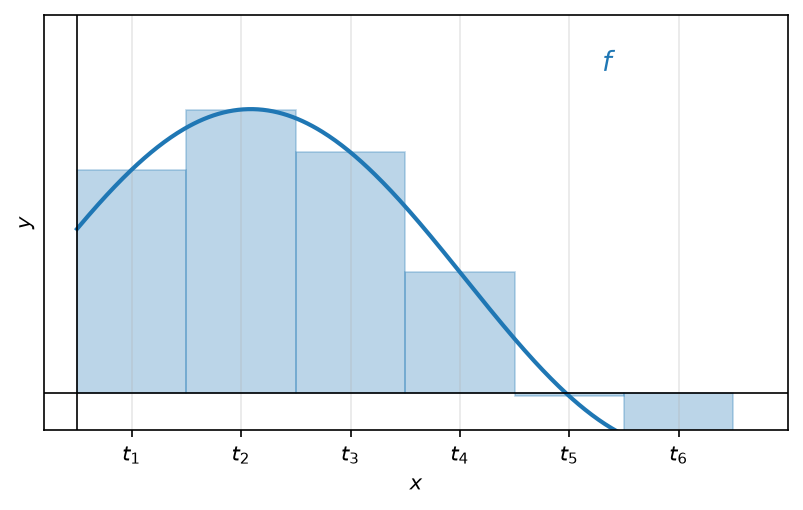
נפתח את אגף ימין:
\[F(b) - F(a) = F(1) - F(0) = F(\frac{n}{n}) - F(\frac{n-1}{n}) + F(\frac{n-1}{n}) - F(\frac{n-2}{n}) + F(\frac{n-2}{n})\]
\[+ \dots + -F(\frac{2}{n}) + F(\frac{2}{n}) + F(\frac{1}{n}) + F(\frac{1}{n}) - F(0)\]
\[.= \frac{1}{n} \cdot \frac{F(\frac{n}{n}) - F(\frac{n-1}{n})}{\frac{1}{n}} + \frac{1}{n} + \dots + \frac{1}{n} \frac{F(\frac{2}{n}) - F(\frac{1}{n})}{\frac{1}{n}} + \frac{1}{n} \frac{F(\frac{1}{n}) - F(0)}{\frac{1}{n}}\]
נפעיל את לגראנד’ על \(F(x)\) על כל הקטעים \([0, \frac{1}{n}], \dots\)
\[= \frac{1}{n}[F'(t_n) + \dots + F'(t_2) + F'(t_1)] = \frac{1}{n}[f(t_1) + \dots + f(t_n)] = \text{סכום רימן}\]
כך חיברנו בין מציאת פונקציה קדומה של \(f\), לבין החישוב של \(\int_a^b f(x)dx\).
הערה 19.1. הגדרה 19.9.1.
הערה:
האינטגרל המסוים מייצג “שטח נטו”, כלומר שטחים שנמצאים מעל ציר ה-x יתווספו בסימן חיובי, ושטחים שנמצאים מתחת לציר ה-x יוחסרו (סימן שלילי). זאת בניגוד לחישוב שטח גיאומטרי כולל, שבו היינו מחברים את הערכים המוחלטים של כל האזורים.
תרשים: שטח נטו — אזורים מעל הציר חיוביים ואזור מתחת לציר שלילי (\(-\tfrac{1}{2}\))
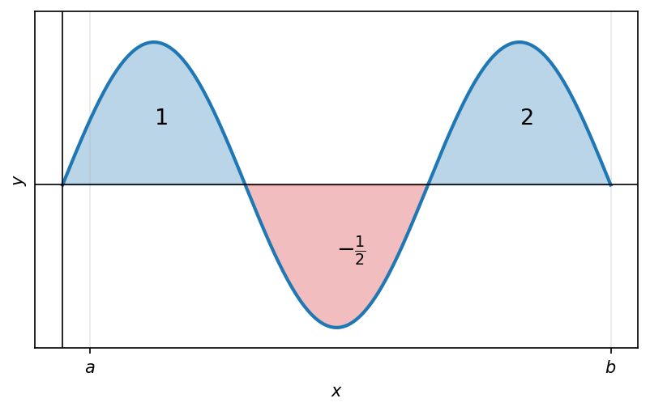
\[\int_a^b f(x)dx = 1 - \frac{1}{2} + 2 = 2\frac{1}{2}\]
דוגמאות
(1) חשבו: \(\int_{-1}^2 x^2 dx\)
לפונקציה \(f(x) = x^2\) יש קדומה
\[f(x) = \frac{x^3}{3}\]
ולכן ממשפט ניוטון-לייבניץ, נחשב:
\[\int_{-1}^2 x^2 dx = F(2) - F(-1) = \frac{2^3}{3} - \frac{(-1)^3}{3} = \frac{8}{3} + \frac{1}{3} = \boxed{3}\]
תרשים: השטח מתחת ל-\(f(x)=x^2\) בין \(x=-1\) ל-\(x=2\)
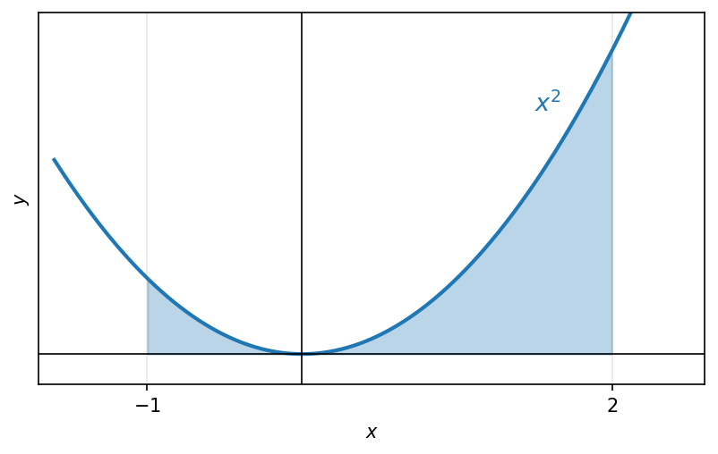
(2) בקטע \([a,c]\) מתקיים \(f(x) \geq g(x)\)
תרשים: השטחים \(1,2,3\) הכלואים בין \(f\) ל-\(g\) בקטעים \([a,c],[c,d],[d,b]\)
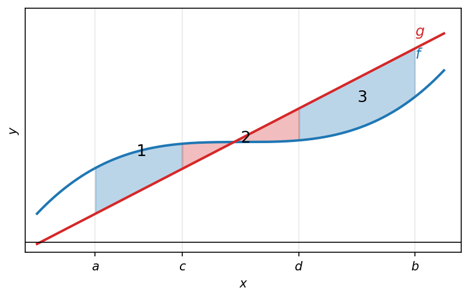
שטח 1 ב- \([a,c]\) : \(\int_a^c (f(x) - g(x))dx\)
שטח 2 ב- \([c,d]\) : \(\int_c^d (g(x) - f(x))dx\)
שטח 2 ב- \([d,b]\) : \(\int_d^b (f(x) - g(x))dx\)
סה”כ : \(\int_a^c f - g + \int_c^d g - f + \int_d^b f - g = \boxed{\int_a^b |f(x) - g(x)|dx}\)
(3) חשבו את השטח החסום בין הפונקציות \(g(x) = x^3\) , \(f(x) = x\)
תרשים: השטחים החסומים בין \(f(x)=x\) ל-\(g(x)=x^3\) בקטע \([-1,1]\)
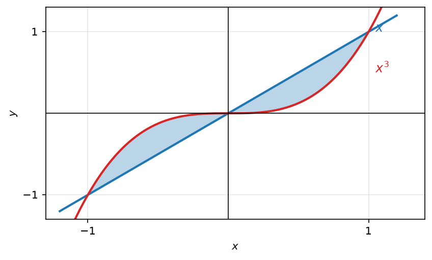
\[\int_{-1}^1 |x - x^3| dx = \int_{-1}^0 (x^3 - x)dx + \int_0^1 (x - x^3)dx =\]
\[= (\frac{0^4}{4} - \frac{0^2}{2}) - (\frac{1}{4} - \frac{1}{2}) = (\frac{1}{2} - \frac{1}{4} - 0) = \boxed{\frac{1}{2}}\]
(4) חשבו את \(\int_{-1}^1 x^2 \sin(x)dx\)
נמצא קדומה של \(x^2 \sin(x)\) :
\[\int \underset{u}{x^2} \underset{v'}{\sin(x)} dx = \underset{u}{x^2} \cdot \underset{v}{(-\cos(x))} - \int \underset{u'}{2x} \cdot \underset{v}{(-\cos(x))} dx = -x^2 \cos(x) + 2 \cdot \int \underset{u}{x} \underset{v'}{\cos(x)} dx =\]
\[= -x^2 \cos(x) + 2[x \cdot \sin(x) - \int \sin(x)dx] = \boxed{-x^2 \cos(x) + 2 \cdot \cos(x) + 2 \cdot \cos(x)}\]
נסמן \(F(x)\) קדומה של \(x^2 \sin(x)\) ולכן לפי משפט ניוטון-לייבניץ:
\[\int_{-1}^1 x^2 \sin(x)dx = F(1) - F(-1) =\]
\[= (-\cos(1) + 2\sin(1) + 2\cos(1)) - (-\cos(-1) - 2\sin(-1) + 2\cos(-1)) = \boxed{0}\]
הפונקציה \(x^2 \sin(x)\) אי-זוגית
הערה 19.2. הגדרה 19.9.2.
הערה:
תרשים: פונקציה זוגית (סימטרית, השטחים מצטברים) מול פונקציה אי-זוגית (השטחים מתבטלים)
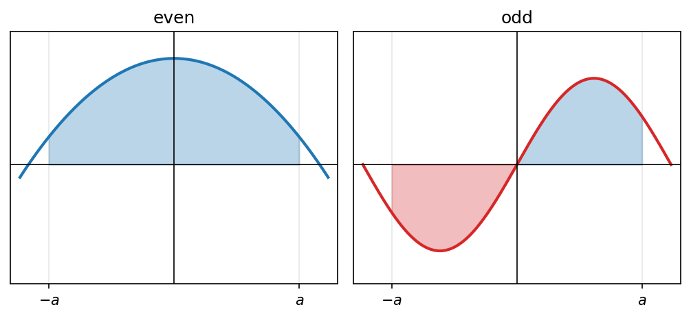
פונקציה זוגית:
\[\int_{-a}^a f(x)dx = 2\int_0^a f(x)dx\]
\(-a\) , \(a\) חייבים להיות שווים
פונקציה אי-זוגית:
\[\int_{-a}^a f(x)dx = \boxed{0}\]
\(-a\) , \(a\) חייבים להיות שווים
(5) חשבו את השטח של חצי מעגל סביב 0 עם רדיוס 1.
תרשים: חצי העיגול העליון \(y=\sqrt{1-x^2}\) עם מרכז בראשית ורדיוס \(1\), השטח צבוע
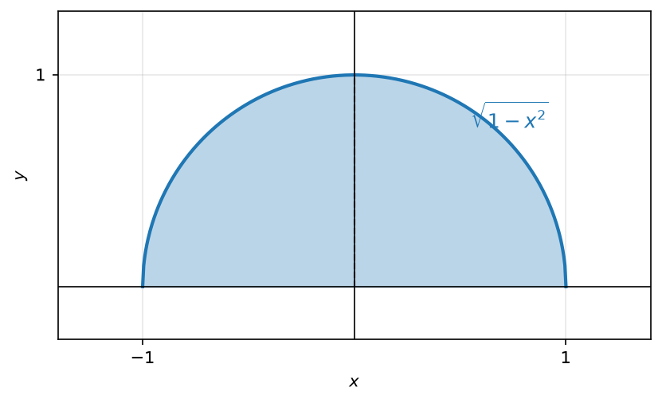
\[x^2 + y^2 = R^2\] \[R = 1\] \[y^2 = 1 - x^2\] \[y = \sqrt{1 - x^2}\]
נסמן : \(f(x) = \sqrt{1 - x^2}\)
\[\int_{-1}^1 f(x)dx = \int_{-1}^1 \sqrt{1 - x^2}dx = \int \sqrt{1 - \sin^2(t)} \cdot \cos(t)dt = \int \cos(t) \cdot \cos(t)dt =\]
\[= \int \cos^2(t)dt = \int \frac{1 + \cos(2t)}{2}dt = \int \frac{1}{2}dt + \frac{1}{2}\int \cos(2t)dt = \frac{t}{2} + \frac{1}{2} \cdot \frac{\sin(2t)}{2} =\]
\[= \frac{t}{2} + \frac{\sin(2t)}{4} = \frac{\arcsin(x)}{2} + \frac{\sin(2 \cdot \arcsin(x))}{4} = \boxed{\frac{\arcsin(x)}{2} + \frac{\sqrt{1 - x^2} \cdot x}{2}}\]
19.10 דוגמה: גבול עם אינטגרל
תוכן בהכנה — להשלמה.
19.11 שימושים: שטח, נפח גוף סיבוב ואורך עקומה
- חשבו את השטח של חצי מעגל סביב 0 עם רדיוס 1.
תרשים: חצי מעגל ברדיוס \(1\) ומרכז בראשית, הנקודות \(0\) ו-\(1\) מסומנות על הציר
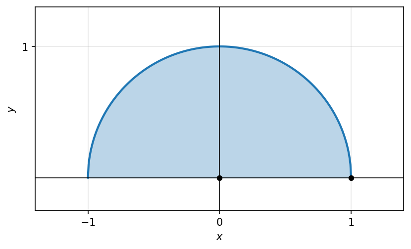
\[x^2 + y^2 = R^2\] \[R = 1\] \[y^2 = 1 - x^2\] \[y = \sqrt{1 - x^2}\]
\[\sqrt{x^2 + y^2} \leq 1 \ , \ y = \sqrt{1 - x^2}\]
נסמן: \(f(x) = \sqrt{1 - x^2}\)
\[\int_{-1}^{1} f(x)dx = \int_{-1}^{1} \sqrt{1 - x^2}\,dx = \int \sqrt{1 - \sin^2(t)} \cdot \cos(t)\,dt = \int \cos(t) \cdot \cos(t)\,dt =\]
נסמן: \[\begin{bmatrix} x = \sin(t) \ , \ \arcsin(x) = t \\ dx = \cos(t)dt \end{bmatrix}\]
\[= \int \cos^2(t)dt = \int \frac{1 + \cos(2t)}{2}\,dt = \int \frac{1}{2}\,dt + \frac{1}{2}\int \cos(2t)\,dt = \frac{t}{2} + \frac{1}{2} \cdot \frac{\sin(2t)}{2} =\]
(זווית כפולה)
\[= \frac{t}{2} + \frac{\sin(2t)}{4} = \frac{\arcsin(x)}{2} + \frac{\sin(2 \cdot \arcsin(x))}{4} = \frac{\arcsin(x)}{2} + \frac{\sqrt{1 - x^2} \cdot x}{2}\]
(הצבה)
\[= F(x)\]
ולכן
\[\int_{-1}^{1} f(x)dx = \int_{-1}^{1} \sqrt{1 - x^2}\,dx = \frac{\arcsin(1)}{2} - \frac{\arcsin(-1)}{2} = \frac{\frac{\pi}{2} - \frac{-\pi}{2}}{2} = \frac{\pi}{2}\]
\[= F(1) - F(-1)\]
\[\begin{bmatrix} \arcsin(1) = \frac{\pi}{2} \to \sin(\frac{\pi}{2}) = 1 \\ \arcsin(-1) = -\frac{\pi}{2} \to \sin(-\frac{\pi}{2}) = -1 \end{bmatrix}\]
דרך אחרת לפתרון:
\[\int_{-1}^{1} f(x)dx = \int_{-1}^{1} \sqrt{1 - x^2}\,dx = \int \sqrt{1 - \sin^2(t)} \cdot \cos(t)\,dt = \int \cos(t) \cdot \cos(t)\,dt =\]
נסמן: \[\begin{bmatrix} x = \sin(t) \ , \ \arcsin(x) = t \\ dx = \cos(t)dt \end{bmatrix}\]
\[= \int \cos^2(t)dt = \int \frac{1 + \cos(2t)}{2}\,dt = \int \frac{1}{2}\,dt + \frac{1}{2}\int \cos(2t)\,dt = g(\frac{\pi}{2}) - g(-\frac{\pi}{2}) = \frac{\pi}{4} - (-\frac{\pi}{4}) = \frac{\pi}{2}\]
(זווית כפולה)
(ניוטון-לייבניץ)
\[g(t) = \frac{t}{2} + \frac{\sin(2t)}{4}\]
הקדומה שלה:
הפונקציה \(f\) רציפה ב-\([a,b]\) והיא אי-שלילית.
נפח של סיבוב- סביב ציר ה-x:
תרשים: חרוט שנוצר מסיבוב הישר \(f(x)=x\) סביב ציר ה-\(x\)
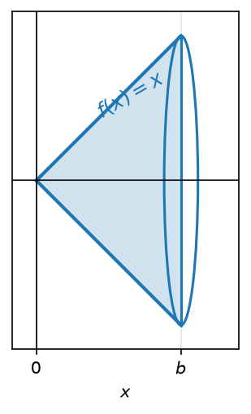
\[\pi \int_{a}^{b} f(x)^2\,dx\]
נפח של סיבוב- סביב ציר ה-y:
תרשים: חרוט שנוצר מסיבוב הישר \(f(x)=x\) סביב ציר ה-\(y\)
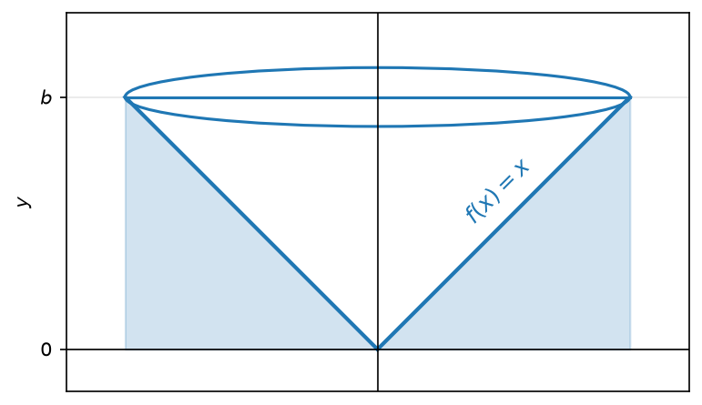
\[\pi \int_{a}^{b} x \cdot f(x)\,dx\]
אורך קשת:
תרשים: אורך הקשת של העקומה \(f\) בקטע \([a,b]\), עם קווים אנכיים בקצוות
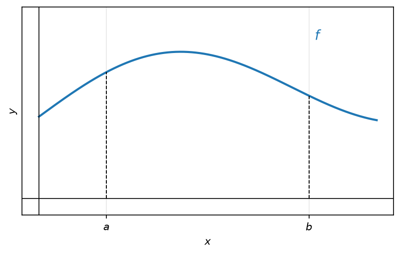
\[l = \int_{a}^{b} \sqrt{1 + (f'(x))^2}\,dx\]
19 האינטגרל המסוים – חשבון דיפרנציאלי ואינטגרלי 1 להנדסה 19 האינטגרל המסוים – חשבון דיפרנציאלי ואינטגרלי 1 להנדסה 19 האינטגרל המסוים – חשבון דיפרנציאלי ואינטגרלי 1 להנדסה חשבון דיפרנציאלי ואינטגרלי 1 להנדסה